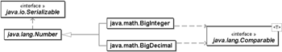

18.7 Große Zahlen *
Die feste Länge der primitiven Datentypen int, long für Ganzzahlwerte und float, double für Fließkommawerte reicht für diverse numerische Berechnungen nicht aus. Besonders wünschenswert sind beliebig große Zahlen in der Kryptografie und präzise Auflösungen in der Finanzmathematik. Für solche Anwendungen gibt es im math-Paket zwei Klassen: BigInteger für Ganzzahlen und BigDecimal für Gleitkommazahlen.
Abbildung 18.3: Vererbungsbeziehung von BigInteger und BigDecimal
18.7.1 Die Klasse BigInteger
Mit der Klasse BigInteger ist es uns möglich, beliebig genaue Zahlen anzulegen, zu verwalten und damit zu rechnen. Die BigInteger-Objekte werden dabei immer so lang, wie die entsprechenden Ergebnisse Platz benötigen (engl. infinite word size). Die Berechnungsmöglichkeiten gehen dabei weit über die der primitiven Typen hinaus und bieten des Weiteren viele statische Methoden der Math-Klasse. Zu den Erweiterungen gehören modulare Arithmetik, Bestimmung des größten gemeinsamen Teilers (ggT), Pseudo-Primzahltests, Bitmanipulation und Weiteres.
Die Implementierung stellt ein BigInteger-Objekt intern wie auch die primitiven Datentypen byte, short, int, long im Zweierkomplement da. Auch die weiteren Operationen entsprechen den Ganzzahl-Operationen der primitiven Datentypen, wie etwa die Division durch null, die eine ArithmeticException auslöst.
Intern vergrößert ein BigInteger, wenn nötig, den Wertebereich, sodass einige Operationen nicht übertragbar sind. So kann der Verschiebe-Operator >>> nicht übernommen werden, denn bei einer Rechtsverschiebung haben wir kein Vorzeichen-Bit im BigInteger. Da die Größe des Datentyps bei Bedarf immer ausgedehnt wird und durch diese interne Anpassung des internen Puffers kein Überlauf möglich ist, muss ein Anwender gegebenenfalls einen eigenen Überlauftest in sein Programm einbauen, wenn er den Wertebereich beschränken will.
Auch bei logischen Operatoren muss eine Interpretation der Werte vorgenommen werden. Bei Operationen auf zwei BigInteger-Objekten mit unterschiedlicher Bitlänge wird der kleinere Wert dem größeren durch Replikation (Wiederholung) des Vorzeichen-Bits angepasst. Über spezielle Bitoperatoren können einzelne Bits gesetzt werden. Wie bei der Klasse BitSet lassen sich durch die »unendliche« Größe Bits setzen, auch wenn die Zahl nicht so viele Bits benötigt. Durch die Bitoperationen lässt sich das Vorzeichen einer Zahl nicht verändern; gegebenenfalls wird vor der Zahl ein neues Vorzeichen-Bit mit dem ursprünglichen Wert ergänzt.
BigInteger-Objekte erzeugen
Zur Erzeugung stehen uns verschiedene Konstruktoren zur Verfügung. Einen Standard-Konstruktor gibt es nicht. Neben Konstruktoren, die das Objekt mit Werten aus einem Byte-Feld oder String initialisieren, lässt sich auch ein Objekt mit einer zufälligen Belegung erzeugen. Die Klasse BigInteger bedient sich dabei der Klasse java.util.Random. Ebenso lassen sich BigInteger-Objekte erzeugen, die Pseudo-Primzahlen sind.
class java.math.BigInteger |
- BigInteger(String val)
Erzeugt ein BigInteger aus einem Ziffern-String mit einem optionalen Vorzeichen. - BigInteger(String val, int radix)
Ein String mit einem optionalen Vorzeichen wird zu einem BigInteger-Objekt übersetzt. Der Konstruktor verwendet die angegebene Basis radix, um die Zeichen des Strings als Ziffern zu interpretieren. Für radix > 10 werden die Buchstaben A–Z beziehungsweise a–z als zusätzliche »Ziffern« verwendet. - BigInteger(byte[] val)
Ein Byte-Feld mit einer Zweierkomplement-Repräsentation einer BigInteger-Zahl im Big-Endian-Format (Array-Element mit Index 0, enthält die niederwertigsten Bits) initialisiert das neue BigInteger-Objekt. - BigInteger(int signum, byte[] magnitude)
Erzeugt aus einem Big-Endian-Betrag beziehungsweise einer Vorzeichen-Repräsentation ein BigInteger-Objekt. signum gibt das Vorzeichen an und kann mit –1 (negative Zahlen), 0 (Null) und 1 (positive Zahlen) belegt werden. - BigInteger(int bitLength, int certainty, Random rnd)
Erzeugt eine BigInteger-Zahl mit der Bitlänge bitLength (>1), bei der es sich mit gewisser Wahrscheinlichkeit um eine Primzahl handelt. Der Wert certainty bestimmt, wie wahrscheinlich ein Fehlurteil ist. Mit der Wahrscheinlichkeit 1/(2^certainty) handelt es sich bei der erzeugten Zahl fälschlicherweise doch um keine Primzahl. Je größer certainty (und je unwahrscheinlicher ein Fehlurteil) ist, desto mehr Zeit nimmt sich der Konstruktor. - BigInteger(int numbits, Random rnd)
Liefert eine Zufallszahl aus dem Wertebereich 0 bis 2numBits – 1. Alle Werte sind gleich wahrscheinlich. - static BigInteger valueOf(long val)
Statische Fabrikmethode, die aus einem long ein BigInteger konstruiert.
Bei falschen Zeichenfolgen löst der Konstruktor mit String-Parameter eine NumberFormatException aus.
| Beispiel |
|
Gegeben sei eine Zeichenkette, die eine Binärfolge aus Nullen und Einsen kodiert. Dann lässt sich ein Objekt der Klasse BigInteger nutzen, um diese Zeichenkette in ein Byte-Array zu konvertieren: String s = "11011101 10101010 0010101 00010101".replace( " ", "" ); |
Leider existiert noch immer kein Konstruktor, der auch den long-Datentyp annimmt. Seltsam – denn es gibt die statische Fabrikmethode valueOf(long), die BigInteger-Objekte erzeugt. Dies ist sehr verwirrend, da viele Programmierer diese Methoden übersehen und ein String-Objekt verwenden. Besonders ärgerlich ist es dann, einen privaten Konstruktor zu sehen, der mit einem long arbeitet. Genau diesen Konstruktor nutzt auch valueOf().
Neben den Konstruktoren und dem valueOf() gibt es drei Konstanten für die Werte 0, 1 und 10.
class java.math.BigInteger |
- static final BigInteger ZERO
- static final BigInteger ONE
- static final BigInteger TEN
18.7.2 Methoden von BigInteger
Die erste Kategorie von Methoden bildet arithmetische Operationen nach, für die es sonst ein Operatorzeichen oder eine Methode aus Math gäbe.
class java.math.BigInteger |
- BigInteger abs()
Liefert den Absolutwert, ähnlich wie Math.abs() für primitive Datentypen. - BigInteger add(BigInteger val)
- BigInteger and(BigInteger val)
- BigInteger andNot(BigInteger val)
- BigInteger divide(BigInteger val)
- BigInteger mod(BigInteger m)
- BigInteger multiply(BigInteger val)
- BigInteger or(BigInteger val)
- BigInteger remainder(BigInteger val)
- BigInteger subtract(BigInteger val)
- BigInteger xor(BigInteger val)
Bildet ein neues BigInteger-Objekt mit der Summe, Und-Verknüpfung, Und-Nicht-Verknüpfung, Division, dem Modulo, Produkt, Oder, Restwert, der Differenz, dem Xor dieses Objekts und des anderen. - BigInteger[] divideAndRemainder(BigInteger val)
Liefert ein Feld mit zwei BigInteger-Objekten. Im Feld, dem Rückgabeobjekt, steht an der Stelle 0 der Wert für this / val, und an der Stelle 1 folgt this % val. - BigInteger modInverse(BigInteger m)
Bildet ein neues BigInteger, indem es vom aktuellen BigInteger 1 subtrahiert und es dann Modulo m nimmt. - BigInteger modPow(BigInteger exponent, BigInteger m)
Nimmt den aktuellen BigInteger hoch exponent Modulo m. - BigInteger negate()
Negiert das Objekt, liefert also ein neues BigInteger mit umgekehrtem Vorzeichen. - BigInteger not()
Liefert ein neues BigInteger, das die Bits negiert hat. - BigInteger pow(int exponent)
Bildet this hoch exponent. - int signum()
Liefert das Vorzeichen des eigenen BigInteger-Objekts.
Die nächste Kategorie von Methoden ist eng mit den Bits der Zahl verbunden:
- int bitCount()
Zählt die Anzahl gesetzter Bits der Zahl, die im Zweierkomplement vorliegt. - int bitLength()
Liefert die Anzahl der Bits, die nötig sind, um die Zahl im Zweierkomplement ohne Vorzeichen-Bit darzustellen. - BigInteger clearBit(int n)
- BigInteger flipBit(int n)
- BigInteger setBit(int n)
Liefert ein neues BigInteger-Objekt mit gelöschtem/gekipptem/gesetztem n-tem Bit. - BigInteger shiftLeft(int n)
- BigInteger shiftRight(int n)
Schiebt die Bits um n Stellen nach links/rechts. - int getLowestSetBit()
Liefert die Position eines Bits, das in der Repräsentation der Zahl am weitesten rechts gesetzt ist. - boolean testBit(int n)
true, wenn das Bit n gesetzt ist.
Folgende Methoden sind besonders für kryptografische Verfahren interessant:
- BigInteger gcd(BigInteger val)
Liefert den größten gemeinsamen Teiler vom aktuellen Objekt und val. - boolean isProbablePrime(int certainty)
Ist das BigInteger-Objekt mit der Wahrscheinlichkeit certainty eine Primzahl? - BigInteger nextProbablePrime()
Liefert die nächste Ganzzahl hinter dem aktuellen BigInteger, die wahrscheinlich eine Primzahl ist. - static BigInteger probablePrime(int bitLength, Random rnd)
Liefert mit einer bestimmten Wahrscheinlichkeit eine Primzahl der Länge bitLength.
Die letzte Gruppe bilden die Vergleichs- und Konvertierungsmethoden:
- int compareTo(Object o)
- int compareTo(BigInteger o)
Da die Klasse BigInteger die Schnittstelle java.lang.Comparable implementiert, lässt sich jedes BigInteger-Objekt mit einem anderen vergleichen. Die Methode mit dem Datentyp BigInteger ist natürlich nicht von Comparable vorgeschrieben, aber beide Methoden sind identisch. - double doubleValue()
- float floatValue()
- int intValue()
- long longValue()
Konvertiert den BigInteger in ein double/float/int/long. Es handelt sich um implementierte Methoden der abstrakten Oberklasse Number. - boolean equals(Object x)
Vergleicht, ob x und das eigene BigInteger-Objekt den gleichen Wert annehmen. - BigInteger max(BigInteger val)
- BigInteger min(BigInteger val)
Liefert das größere/kleinere der BigInteger-Objekte als Rückgabe. - byte[] toByteArray()
Liefert ein Byte-Feld mit dem BigInteger als Zweierkomplement. - String toString()
- String toString(int radix)
Liefert die String-Repräsentation von diesem BigInteger zur Basis 10 beziehungsweise einer beliebigen Basis. - static BigInteger valueOf(long val)
Erzeugt ein BigInteger, das den Wert val annimmt.
18.7.3 Ganz lange Fakultäten
Unser Beispielprogramm soll die Fakultät einer natürlichen Zahl berechnen. Die Zahl muss positiv sein:
Listing 18.11: Factorial.java
import java.math.*;
class Factorial
{
static BigInteger factorial( int n )
{
BigInteger result = BigInteger.ONE;
if ( n == 0 || n == 1 )
return result;
if ( n > 1 )
for ( int i = 1; i <= n; i++ )
result = result.multiply( BigInteger.valueOf(i) );
return result;
}
static public void main( String[] args )
{
System.out.println( factorial(100) );
}
}
Neben dieser iterativen Variante ist eine rekursive denkbar. Sie ist allerdings aus zwei Gründen nicht wirklich gut. Zuerst aufgrund des hohen Speicherplatzbedarfs: Für die Berechnung von n! sind n Objekte nötig. Im Gegensatz zur iterativen Variante müssen jedoch alle Zwischenobjekte bis zum Auflösen der Rekursion im Speicher gehalten werden. Dadurch ergibt sich die zweite Schwäche: die längere Laufzeit. Aus akademischen Gründen soll dieser Weg hier allerdings aufgeführt werden. Es ist interessant zu beobachten, wie diese rekursive Implementierung den Speicher aufzehrt. Dabei ist es nicht einmal der Heap, der keine neuen Objekte mehr aufnehmen kann, sondern vielmehr der Stack des aktuellen Threads:
Listing 18.12: Factorial.java, factorial2()
public static BigInteger factorial2( int i )
{
if ( i <= 1 )
return BigInteger.ONE;
return BigInteger.valueOf( i ).multiply( factorial2( i – 1 ) );
}
18.7.4 Große Fließkommazahlen mit BigDecimal
Während sich BigInteger um die beliebig genauen Ganzzahlen kümmert, übernimmt BigDecimal die Fließkommazahlen.
BigDecimal aufbauen
Der Konstruktor nimmt unterschiedliche Typen an, unter anderem double und String. Bei double ist Obacht geboten, denn während
new BigDecimal( 1.00000000000000000000000000000000000000000000000000000001 )
das Literal auf den für double gültigen Bereich bringt (1), ist Folgendes präzise:
new BigDecimal( "1.00000000000000000000000000000000000000000000000000000001" )
Das gleiche Phänomen ist bei System.out.println(new BigDecimal(Math.PI)); zu beobachten; die Ausgabe suggeriert eine hohe Genauigkeit:
3.141592653589793115997963468544185161590576171875
Richtig ist jedoch:
3.141592653589793238462643383279502884197169399375
Methoden statt Operatoren
Mit den BigDecimal-Objekten lässt sich nun rechnen, wie von BigInteger bekannt. Die wichtigsten Methoden sind:
class java.math.BigDecimal |
- BigDecimal add(BigDecimal augend)
- BigDecimal subtract(BigDecimal subtrahend)
- BigDecimal divide(BigDecimal divisor)
- BigDecimal multiply(BigDecimal multiplicand)
- BigDecimal remainder(BigDecimal divisor)
- BigDecimal abs()
- BigDecimal negate()
- BigDecimal plus()
- BigDecimal max(BigDecimal val)
- BigDecimal min(BigDecimal val)
- BigDecimal pow(int n)
Des Weiteren gibt es drei Konstanten für die Zahlen BigDecimal.ZERO, BigDecimal.ONE und BigDecimal.TEN.
Rundungsmodus
Eine Besonderheit stellt jedoch die Methode divide() dar, die zusätzlich einen Rundungsmodus und optional auch eine Anzahl gültiger Nachkommastellen bekommen kann.
BigDecimal a = new BigDecimal( "10" );
BigDecimal b = new BigDecimal( "2" );
System.out.println( a.divide(b) ); // 5
Es ist kein Problem, wenn das Ergebnis eine Ganzzahl oder das Ergebnis exakt ist.
System.out.println( new BigDecimal(1).divide(b) ); // 0.5
Wenn das Ergebnis aber nicht exakt ist, lässt sich divide() nicht einsetzen. Die Anweisung
new BigDecimal(1).divide( new BigDecimal(3) )
ergibt den Fehler:
java.lang.ArithmeticException: Non-terminating decimal expansion; no exact representable decimal result.
An dieser Stelle kommen die Rundungsmodi ROUND_UP, ROUND_DOWN, ROUND_CEILING, ROUND_FLOOR, ROUND_HALF_UP, ROUND_HALF_DOWN, ROUND_HALF_EVEN ins Spiel. ROUND_UNNECESSARY ist auch einer davon, darf aber nur dann verwendet werden, wenn die Division exakt ist:
System.out.println( c.divide(d, BigDecimal.ROUND_UP) ); // 1
System.out.println( c.divide(d, BigDecimal.ROUND_DOWN) ); // 0
Jetzt kann noch die Anzahl der Nachkommastellen bestimmt werden:
System.out.println( c.divide(d, 6, BigDecimal.ROUND_UP) ); // 0.333334
System.out.println( c.divide(d, 6, BigDecimal.ROUND_DOWN) ); // 0.333333
| Beispiel |
|
BigDecimal bietet die praktische Methode setScale() an, mit der sich die Anzahl der Nachkommastellen setzen lässt. Das ist zum Runden sehr gut. In unserem Beispiel sollen 45 Liter Benzin zu 1,399 bezahlt werden: Listing 18.13: RoundWithSetScale.java, main() BigDecimal petrol = new BigDecimal( "1.399" ).multiply( new BigDecimal(45) ); |
18.7.5 Mit MathContext komfortabel die Rechengenauigkeit setzen
Die Klasse java.math.MathContext wurde in Java 5 eingeführt, um für BigDecimal komfortabel die Rechengenauigkeit (nicht die Nachkommastellen) und den Rundungsmodus setzen zu können. Vorher wurde diese Information, wie das vorangehende Beispiel gezeigt hat, den einzelnen Berechnungsmethoden mitgegeben. Jetzt kann dieses eine Objekt einfach an alle berechnenden Methoden weitergegeben werden.
Die Eigenschaften werden mit den Konstruktoren gesetzt, denn MathContext-Objekte sind anschließend immutable.
class java.math.MathContext |
- MathContext(int setPrecision)
Baut ein neues MathContext mit angegebener Präzision als Rundungsmodus HALF_UP. - MathContext(int setPrecision, RoundingMode setRoundingMode)
Baut ein neues MathContext mit angegebener Präzision und einem vorgegebenen Rundungsmodus vom Typ RoundingMode. Deklarierte Konstanten der Aufzählung sind CEILING, DOWN, FLOOR, HALF_DOWN, HALF_EVEN, HALF_UP, UNNECESSARY und UP. - MathContext(String val)
Baut ein neues MathContext aus einem String. Der Aufbau des Strings ist wie von toString() der Klasse, etwa precision=34 roundingMode=HALF_EVEN.
Für die üblichen Fälle stehen vier vorgefertigte MathContex-Objekte als Konstanten der Klasse zur Verfügung: DECIMAL128, DECIMAL32, DECIMAL64 und UNLIMITED.
Listing 18.14: MathContextDemo.java, main()
out.println( MathContext.DECIMAL128 ); // precision=34 roundingMode=HALF_EVEN
Nach dem Aufbau des MathContext-Objekts wird es im Konstruktor von BigDecimal übergeben.
class java.math.BigDecimal |
- BigDecimal(BigInteger unscaledVal, int scale, MathContext mc)
- BigDecimal(BigInteger val, MathContext mc)
- BigDecimal(char[] in, int offset, int len, MathContext mc)
- BigDecimal(char[] in, MathContext mc)
- BigDecimal(double val, MathContext mc)
- BigDecimal(int val, MathContext mc)
- BigDecimal(long val, MathContext mc)
- BigDecimal(String val, MathContext mc)
Auch bei jeder Berechnungsmethode lässt sich nun das MathContext-Objekt übergeben:
- BigDecimal abs(MathContext mc)
- BigDecimal add(BigDecimal augend, MathContext mc)
- BigDecimal divide(BigDecimal divisor, MathContext mc)
- BigDecimal divideToIntegralValue(BigDecimal divisor, MathContext mc)
- BigDecimal plus(MathContext mc)
- BigDecimal pow(int n, MathContext mc)
- BigDecimal remainder(BigDecimal divisor, MathContext mc)
- BigDecimal round(MathContext mc)
- BigDecimal subtract(BigDecimal subtrahend, MathContext mc)
Ihr Kommentar
Wie hat Ihnen das <openbook> gefallen? Wir freuen uns immer über Ihre freundlichen und kritischen Rückmeldungen.
 Jetzt bestellen
Jetzt bestellen


{kind=link}